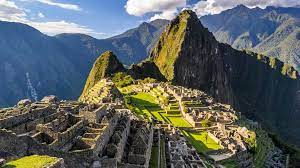

Principal

Esta antigua ciudad inca es uno de los tesoros más preciados de Perú. Fue construida a mediados del siglo XV y se cree que fue una de las residencias del noveno inca del Tahuantinsuyo, Pachacútec, aunque en ella también están los restos de un santuario.